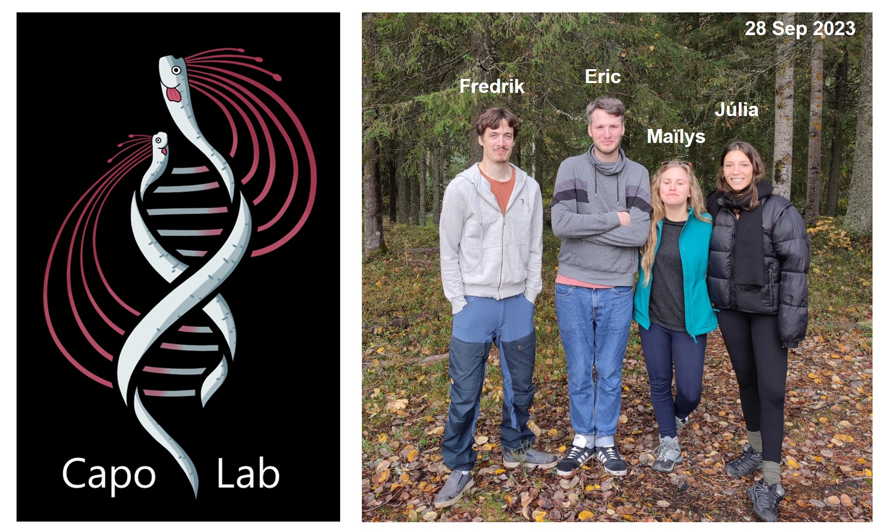

Aquatic microbial ecology lab
We explore the ecology of marine and freshwater systems with a focus on aquatic microorganisms i.e., bacteria, archaea and protists. Our focus lies in understanding the temporal dynamics of microbial communities and their functional responses to environmental change, such as climate change, eutrophication, mercury pollution or coral bleaching. Specifically our main research lines are centered on investigating the consequences of deoxygenation of water columns on microbial processes and related ecosystem services. We apply molecular ecology methods, such as metabarcoding, (ancient) metagenomics, MAGs-based analysis and metatranscriptomics. We rely on molecular paleoecology approaches, based on sedimentary DNA sequencing to reconstruct past changes in aquatic ecosystems. By combining genetic information from past and modern environments, we strive to shed light on the intricate relationships between microbial communities and their environment.
Contact : eric.capo@umu.se
Department of Ecology and Environmental Science, Umeå University (Umeå, Sweden)
